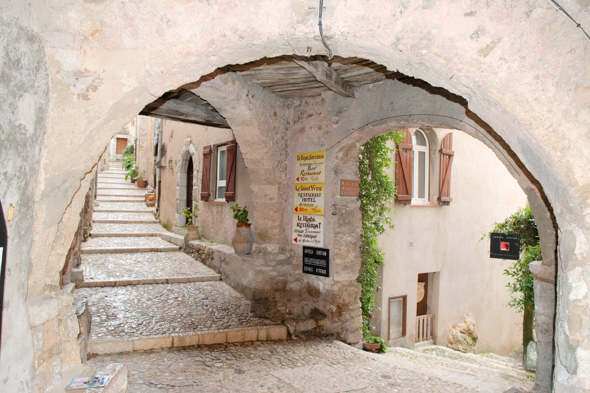
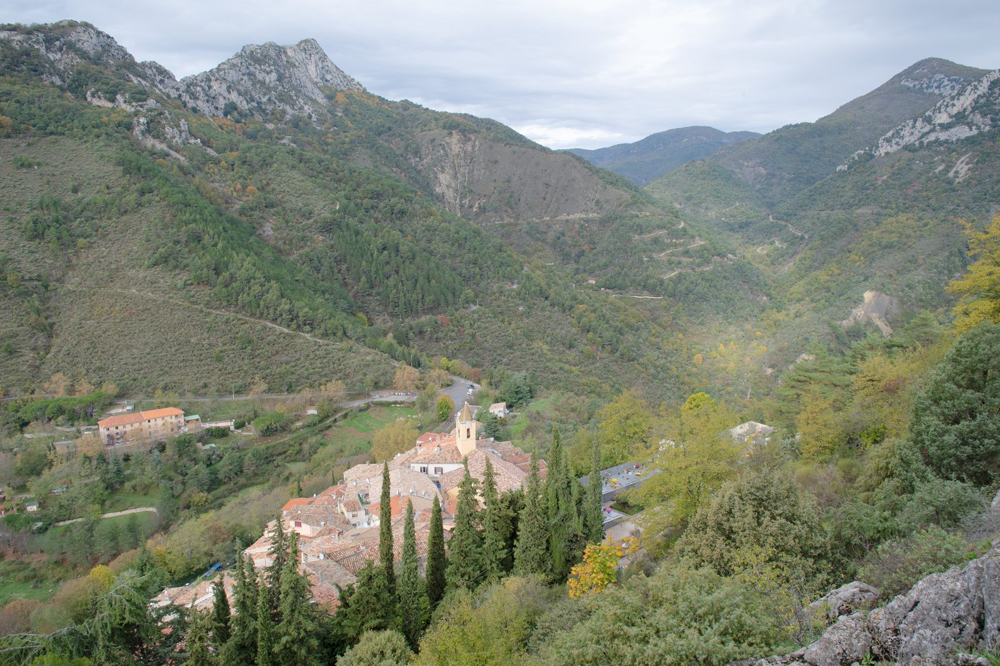
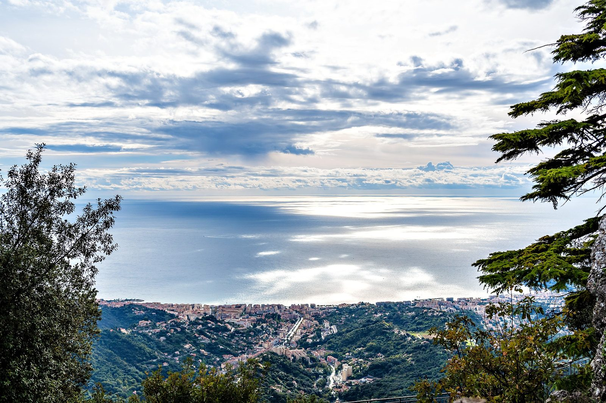

Monaco Made Easy · 游客指南
芒通和山上的村庄
芒通位于法国，是意大利之前海岸上的最后一座城镇，从摩纳哥过去无需边检。这里有从港口向上延伸的彩色老城、长长的海滩、著名的花园，以及身后山上的中世纪村庄。
从摩纳哥前往
从摩纳哥蒙特卡洛站乘火车约10分钟即到芒通。下一站芒通-加拉文更靠近老城东侧、港口和意大利边境。沿海的600路公交也从摩纳哥开往芒通，只是更慢。
芒通的出租车是法国出租车，可以送你去摩纳哥，但摩纳哥出租车不能在芒通接客，芒通出租车也不能在摩纳哥接客。主要候车点在芒通火车站外、赌场旁以及市政厅。
老城与大教堂
色彩缤纷的小巷和台阶从港口一直通往巴洛克风格的圣米歇尔大天使大教堂，可俯瞰大海。很美，但陡峭且台阶多，不适合轮椅和婴儿车。


继续登上大教堂上方，来到建在古城堡旧址上的老城堡墓园。这里宏伟的19世纪墓葬属于让芒通闻名的英国、俄国等过冬游客，其中包括据说发明了橄榄球的威廉·韦布·埃利斯。这里也是俯瞰全城的最佳地点：本页顶部的照片就是在这里拍摄的。墓园仍在使用，请保持安静和尊重。

在城里，仍能看到当年为过冬游客建造的豪华酒店。位于里维埃拉大道的冬宫酒店（Winter Palace）建于1901年，拥有220间客房，1950年代改为私人公寓，现为登记在册的历史建筑，请在街上欣赏。


博物馆与花园
- 让·科克托博物馆（塞弗林·伍德曼收藏）：鲁迪·里乔蒂设计的这座海滨白色建筑自2018年风暴受损后一直关闭。部分藏品在比奥韦花园旁欧洲宫的博物馆画廊（Galerie des Musées）展出。
- 让·科克托博物馆（堡垒馆）：科克托亲自设计的小博物馆，位于港口一座17世纪的堡垒中。
- 卡尔诺莱宫：摩纳哥亲王昔日的夏宫，现为艺术博物馆，并有柑橘园。
- 市中心的比奥韦花园，以及加拉文的瓦尔拉梅植物园，种满热带植物。


Les Halles 有顶市场
芒通的有顶市场位于老城脚下一座色彩缤纷的美好年代建筑中，离海滩仅几步之遥。上午来逛，可以买到本地奶酪、橄榄、熟肉制品和芒通著名的柠檬。


柠檬节
每年二月，柠檬节都会在比奥韦花园摆满用柠檬和橙子制作的巨型雕塑。2027年的柠檬节在2月13日至28日举行，花车巡游在周日下午（2月14、21和28日）于阳光大道上进行。巡游日前往芒通的火车非常拥挤。
Mirazur
Mauro Colagreco 位于意大利边境旁的餐厅，拥有米其林三星。请提前很久预订。
芒通上方的村庄
芒通的 Zest 公交从火车站旁的长途汽车站发车：10路去圣阿涅斯（欧洲最高的沿海村庄之一，海拔约780米，约35分钟），5路去戈尔比奥，6路去卡斯特拉尔（各约30至35分钟）。每天只有几班，出发前请查看时刻。





在应用中，你可以找到芒通的地图、步行路线、酒店、餐厅、厕所、药店和取款机，以及各个村庄和上山的方法。